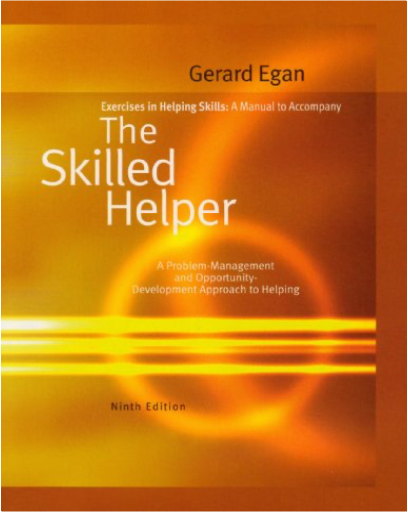
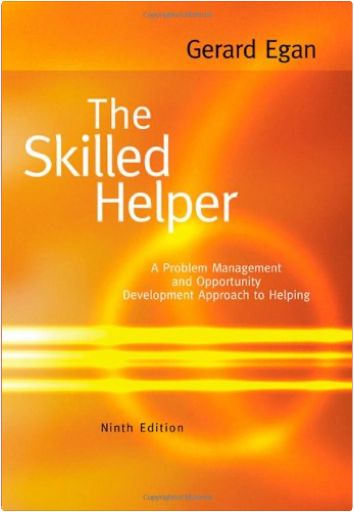
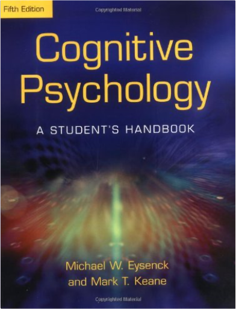

The 'terrible mistake' was the contemporary utilitarian philosophy, expounded in Hard Times (1854) as the Philosophy of Fact by the hard-headed disciplinarian Thomas Gradgrind. But the novel, Dickens's shortest, is more than a polemical tract for the times; the tragic story of Louisa Gradgrind and her father is one of Dickens's triumphs. When Louisa, trapped in a loveless marriage, falls prey to an idle seducer, the crisis forces her father to reconsider his cherished system. Yet even as the development of the story reflects Dickens's growing pessimism about human nature and society, Hard Times marks his return to the theme which had made his early works so popular: the amusements of the people. Sleary's circus represents Dickens's most considered defence of the necessity of entertainment, and infuses the novel with the good humour which has ensured its appeal to generations of readers.  A journey on board one of the legendary tall ship sailing |  Exercises in Helping Skills for Egan's The Skilled Helper, 9thGerard Egan Written by Gerard Egan, with assistance from Rich McGourty, this manual parallels the main text, THE SKILLED HELPER, Ninth Edition. The manual allows students to complete self-development exercises as well as practice communication skills and each of the steps of the model in private before using them in actual face-to-face helping interactions with others.  The Skilled Helper: A Problem-Management and Opportunity-Development Approach to HelpingGerard Egan Emphasizing the collaborative nature of the therapist-client relationship, THE SKILLED HELPER is internationally recognized for its successful problem-management and opportunity development approach to effective helping, using a practical, three-stage model. In this new ninth edition, Egan continues to build upon the "positive psychology", solution-focused theme by adding insightful new discussions on evidence-based practice, research, and philosophical perspectives. Research Methods in PsychologyDavid G. Elmes, Barry H. Kantowitz, III Henry L. Roediger Using contemporary examples from primary sources, RESEARCH METHODS IN PSYCHOLOGY, Eighth Edition encourages students to become engaged in the basics of scientific investigation through an example-based approach. This text displays the authors' commitment to ensuring that the student has a thorough understanding of the research process from the very beginning. Highly readable, it avoids the heavy statistical tone that some introductory students find difficult to understand. Rather, it is conceptually driven to offer students a big picture view of the experimental approach to research. Empirical examples and applications are consistently used throughout to foster critical thinking skills. In many chapters, a unifying empirical example at the beginning of the chapter is cited throughout the chapter to help clarify terms or design problems. By presenting concepts with concrete examples, the text aids students in applying related ideas to their areas of research interest.  Cognitive Psychology: A Student's Handbook 5th EditionMichael W. Eysenck, Mark T. Keane This fifth edition of the best-selling international cognitive psychology textbook has been substantially updated and restructured to reflect new developments in cognitive psychology, and made more student-friendly. |

Doddridge Library
Collection Total:
417 Items
417 Items
Last Updated:
Apr 21, 2020
Apr 21, 2020


 Made with Delicious Library
Made with Delicious Library